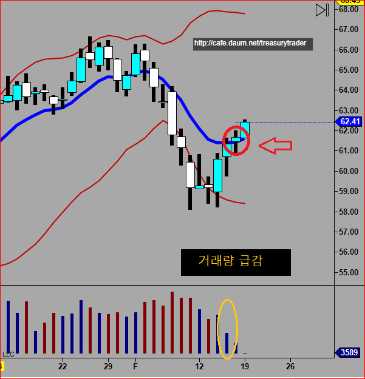
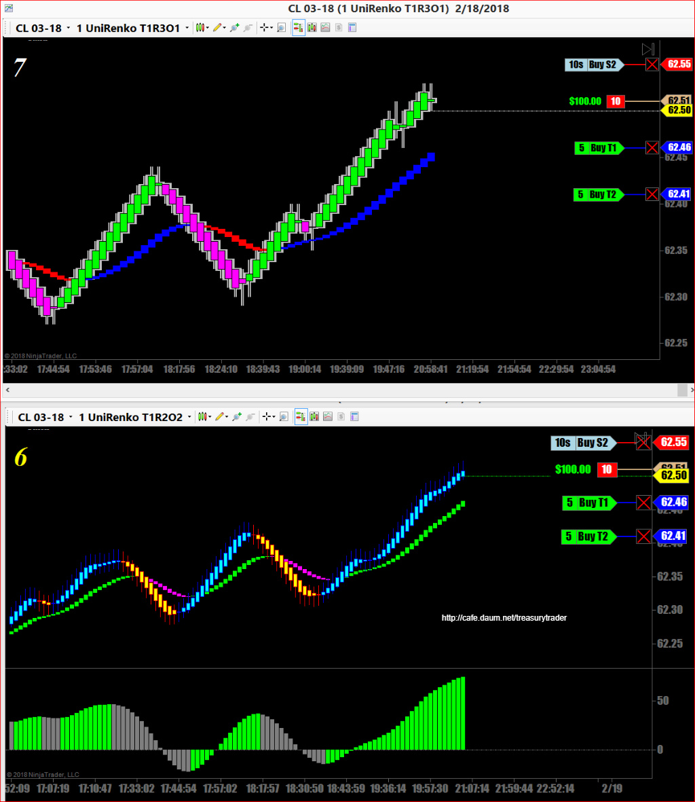
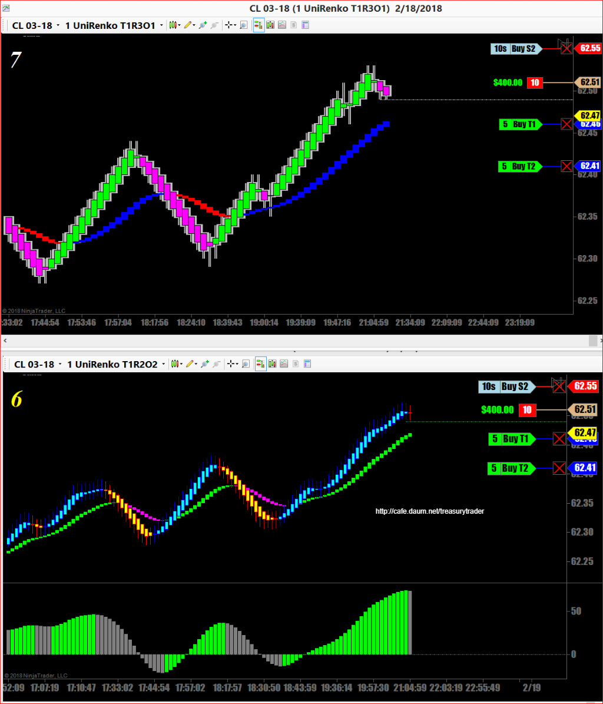
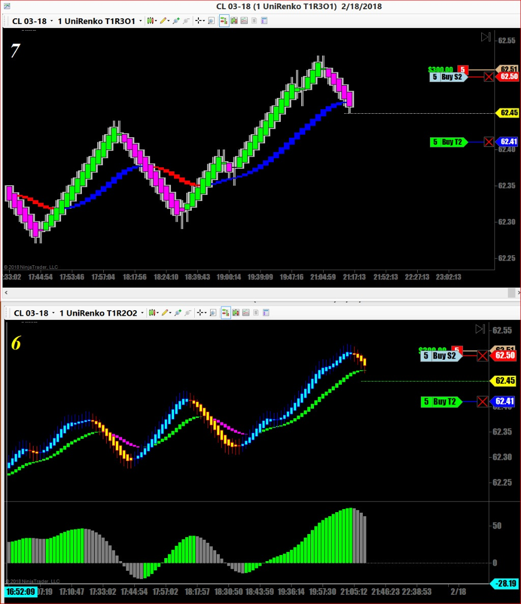
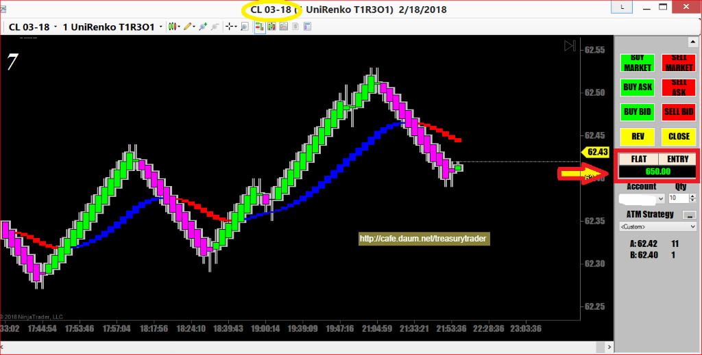

해외선물 - 크루드오일 장외마켓 매매
일요일 저녁 늦게 크루드오일 매매
일봉상 금요일에 narrow range spinning top을 만들면서 금년들어 가장 적은 거래량을 기록
월요일은 휴장이니 화요일부터 상승탄력을 받지 않겠나 싶음
일요일밤에 심심하기도 하고..
월요일이 휴장이면 일요일 저녁 장외마켓에서는 거래가 좀 있으니 일단 적은양으로 공략

CL은 예상대로 일봉상 이평선 위로 완전히 올라앉은 모습
긴가지 하나 뻗고는 멈춰서면서 하락반등 주길래 매도진입
기준선과의 이격이 많이 벌이진 상태
그런데 진입하고나니 거래량이 없어서 10 계약 매매하기도 버거움



장이 너무 안움직여서 기다리다 지루해서 그냥 나옴

오랫만에 매매한 크루드오일
$650 수익으로 마감